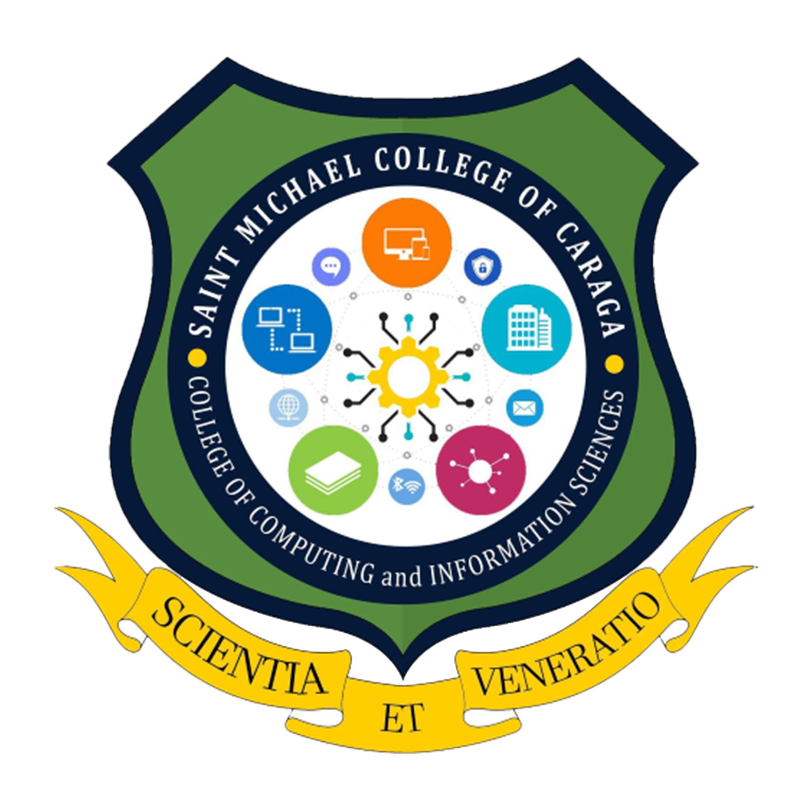

SMCC VMGO
Vision
Saint Michael College of Caraga envision to be a University by 2035 and Upholds Spiritual Formation, Excellence in Teaching, Service and Research.
Mission
As such, SMCC commits itself:
- SMCC shall provide Spiritual Formation and Learning Culture that will ensure the students with an excellent and rewarding learning experience that transform lives, abound spirituality, develop skills, and prepare future leaders;
- SMCC shall engage in dynamic, innovative, and interdisciplinary researches that are publishable to advance and achieve institutional initiatives.
- SMCC shall commit to serve the diverse and local communities in fostering innovations through service-learning that enhances reciprocal community partnerships for spiritual and social development.
GOALS
Uphold Culture of Excellence in the Areas of Spiritual Formation, Instruction, Research, and Extension, thus Produce Graduates that are Globally Competent, Spiritually Embodied, and Socially Responsible.
General Objective
- To integrate positive and evangelical values in all areas and design Christian formation programs that are effective and responsive to the psychospiritual needs of the learners, parents, and personnel.
- To enhance continuously the curriculum cultivate teachers' effectiveness to promote quality instruction.
- To continue upgrading facilities and services for the satisfaction of the clientele.
- To intensify the curriculum-based and institutional research that is dynamic, innovative, and interdisciplinary.
- To implement programs that help educate, motivate, and inspire to assume an active role and become socially responsible stewards of God's creation.
- To provide the best student services catering physical, mental, emotional, spiritual, socio-cultural needs of the students.
- To establish harmonious linkages with the Alumni, PTA, LGU, and other stakeholders to gain support for the school development plans.
- To work for Accreditation by any recognized accrediting agency.
Philosophy
A person is always in the state of becoming until he/she arrives at the state of perfection-when he/she becomes fully alive. Hence, the aim of quality education is to transform every student into fully integrated individuals who have not only honed their skills and potentials to the optimum but who are truly men and women of God and committed persons for others. Thus, SMCC's commitment to the Christian and quality education.
CORE VALUES AND MICHAELINIAN IDENTITY
Core Values
S
M
C
C
-ocially responsible
-issonary
-ommitted
-ompetent
Michaelinian Identity
Secured by Saint Michael the Archangel's Sword of Bravery and Victory, nourished by the faithful acceptance and practice of the Christian teachings and guidance of the Catholic church, animated by Mary's maternal devotion and intercession, guided by the gospel values, and empowered by Christ's life and examples the Michaelinians of today and tomorrow are persons who are:
S
M
C
C
-ocially Responsible for the respect, care, love and development of God's creations as such at all times demonstrate and live out their social responsibilities;
-issionaries of Christian Values in possessing a faith that is dynamic to imbibe and to proclaim and promote the Christian values, hence, sharing in the mission of Christ and of the Catholic church to make all people members of one sheepfold of God;
-ommitted Individuals and/or Leaders as equated to the faithful commitment of Jesus to His Father, thus, upholding unconditional commitment to value-filled life and actions of love and mercy;
-ompetent in their Chosen Fields of Endeavor by being aware, curious, and interested in learning about the world and how it works in order to possess the ability to innovate and ensure success.
Therefore, Michaelinians have the identities of Social Responsibility, Missionaries of Christian Values, Committed Individuals and/or Leaders, and Competent in their fields of endeavor which are paramount to transform people to be person-oriented, persons of values, persons of faith and love for God, and persons of love and mercy for others.
Program Offered
College Courses
-

College of Computer Science and Information Systems
-

College of Art and Science
-

College of Business and Management
-

College of Criminal Justice Education
-

College of Teacher Education
-

College of Tourism and Hospitality Management
View more
College of Computer Science and Information Systems
College of Art and Science
College of Business and Management
College of Criminal Justice Education
College of Teacher Education
College of Tourism and Hospitality Management
Senior High School
Academic Track
Technical-Vocational Track
View moreBasic Education
Nursery
Kindergarten
-
Elementary
-
Junior High School
Services
Contacts
- Atupan St. Brgy. 4, Nasipit, Agusan del Norte Mindanao, Philippines 8602
- https://www.facebook.com/SMCCNasipitOfficial
- admin@smccnasipit.edu.ph
- (085) 300-2932
- 8:00 am - 5:00 pm